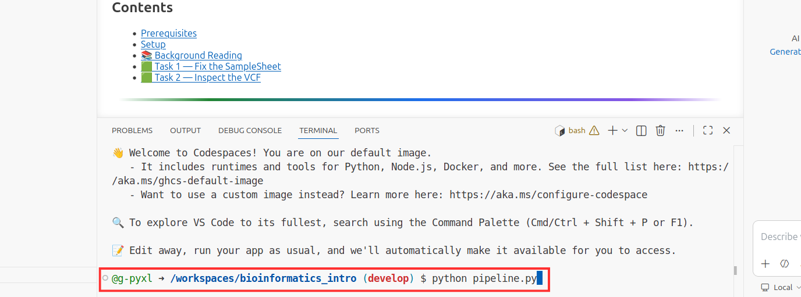

Pre-Interview Exercise
GitHub Basics — estimated 45–60 minutes · Beginner
There are no trick questions and the task does not require previous knowledge or experience. We are looking for clear thinking, attention to detail, and the ability to follow technical instructions.
What you need
What you will do
The task
- Accept the assignment
- Create a branch
- Find and fix a bug
- Commit your fix
- Open a Pull Request
- Complete a short quiz
What we assess
- Following instructions
- Debugging approach
- Commit message quality
- PR description
- Attention to detail
Git & GitHub
Read through this before starting the exercise. You can refer back at any time.
What is Git?
Git is a version control system — software that tracks every change made to a set of files over time. Think of it as an unlimited undo history for an entire codebase, with the added benefit that you can see exactly who changed what, when, and why.
| Term | Meaning |
|---|---|
| Repository (repo) | A folder whose entire history is tracked by Git. |
| Commit | A saved snapshot of your changes, with a message describing what you did. |
| Branch | An isolated copy of the code where you can make changes without affecting the main version. |
| Merge | Bringing changes from one branch into another. |
What is GitHub?
GitHub is a web platform that hosts Git repositories and adds collaboration features on top. In a clinical bioinformatics team it is used to:
| Use | Why it matters |
|---|---|
| Store pipeline code | Every version of the pipeline is preserved and can be reproduced exactly. |
| Review changes | Before new code affects patient results, it is reviewed by a colleague via a Pull Request. |
| Track issues | Bugs and feature requests are logged as GitHub Issues, keeping work organised and auditable. |
| Automate checks | Automated tests run on every change, catching problems before they reach production. |
What is a Pull Request?
A Pull Request (PR) is a proposal to merge changes from one branch into another. It opens a discussion thread where collaborators can review your code line by line, leave comments, and approve or request further changes before merging.
In clinical bioinformatics, the PR review step is essential — it ensures that no change reaches a validated pipeline without a second pair of eyes.
GitHub Classroom & GC Content
What is GitHub Classroom?
GitHub Classroom automates the setup of coding assignments on GitHub. When you accept the assignment, Classroom creates a private repository for you — only you and the instructor can see it.
What is GC content?
GC content is the percentage of bases in a DNA sequence that are either Guanine (G) or Cytosine (C).
GC content matters in bioinformatics because:
- It affects the melting temperature of DNA (higher GC → higher Tm)
- Genomic regions vary in GC content, which can affect sequencing quality
- Some sequencing technologies produce fewer reads in very high or very low GC regions
Your Task
There is a bug in a Python script. Your job is to find it, fix it, and submit your fix via a Pull Request.
The script gc_content.py is supposed to calculate the GC content of DNA sequences, but it produces wrong answers — and for some sequences it crashes entirely.
When you run it, you should see a mix of FAIL results and at least one error. Your task is to read the output carefully, understand why it's failing, and make the fix.
Steps at a glance
- Accept the assignment via the invite link
- Open a Codespace (browser-based editor)
- Create a new branch for your fix
- Run the script and reproduce the bug
- Find and fix the bug in
gc_content.py - Verify all tests pass
- Commit your change with a clear message
- Push your branch
- Open a Pull Request — this is your submission
Accept the assignment
Click the link below and sign in with your GitHub account. GitHub Classroom will automatically create a private repository for you.
Once you have accepted, GitHub Classroom will show a confirmation page. Click the repository link that appears to open your private repo — it will be named something like lesson-1-github-basics-your-username.
Open a Codespace
A Codespace is a full development environment that runs in the browser — no local installation needed.
On your assignment repository, click the green Code button, select the Codespaces tab, and click Create codespace on main.

Wait for the Codespace to finish loading. You will see a file explorer on the left and a terminal panel at the bottom. All remaining steps happen inside this environment.
Create a branch
In the Codespace terminal, create a new branch for your fix:
You should see:
main is unaffected. In clinical bioinformatics, no one ever commits directly to main — changes always go through a branch and a Pull Request.
Reproduce the bug
Run the script in the terminal to see the failing tests:
You should see output like this:
Read the output carefully before touching the code. Ask yourself:
- Which cases fail, and which passes?
- What do the failing sequences have in common?
- What is special about
ATATATATATthat makes it pass? - What causes a
ZeroDivisionErrorforGCGCGCGC?
Find & fix the bug
Open lessons/01_github_basics/gc_content.py in the editor. Read through the calculate_gc_content() function carefully.
Compare the code to the GC content formula from the background reading:
calculate_gc_content(). What is it actually dividing by? Is that the same as "total bases"?
The bug is on this line:
It divides by the AT count instead of the total number of bases. Fix it:
For GCGCGCGC, the AT count is zero — hence the ZeroDivisionError. For all other sequences, the result is inflated because the denominator is too small.
Verify your fix
Save your changes (Ctrl+S), then run the script again:
All five tests should now show PASS:
Commit your change
Stage the file you edited and write a clear commit message:
- Use the imperative mood — "fix bug" not "fixed bug"
- Be specific about what you changed and why
- In clinical bioinformatics, commit messages form part of the audit trail for validated software
Feel free to write your own commit message — the one above is a suggestion. What matters is that it clearly describes the change.
Push your branch
Upload your branch to GitHub:
You should see output ending with something like:
Your code is now on GitHub and ready for a Pull Request.
Open a Pull Request
- Go back to your assignment repository on GitHub
- You should see a banner — "fix/gc-content-bug had recent pushes" — click Compare & pull request
- Make sure the PR merges your
fix/gc-content-bugbranch into your ownmain— both within your repository - Write a short description of the bug you found and how you fixed it
- Click Create pull request
Knowledge Check
Complete a short quiz to finish the exercise.
You've accepted the assignment, fixed the bug, committed your change, and opened a Pull Request. One last step — a short multiple-choice quiz to test your understanding of what you've just done.